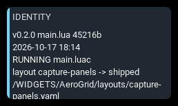
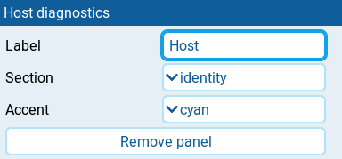

Host diagnostics

Displays facts read from the running AeroGrid host: loaded files, theme, panel failures, source bindings, or a shared event log. This diagnostic panel is for developers and users investigating a dashboard that behaves unexpectedly, rather than for monitoring a flight.
The panel needs at least 2x2 cells to fit its rows.
Settings

| Setting | Default | What it does |
|---|---|---|
| Label | section name | Panel heading. Clear it to use the selected Section. |
| Section | identity | Report to show: identity, theme, panels, sources, or log. |
| Maximum log entries | 64 | Shown for log. Retains 1–256 messages radio-wide. When several log panels exist, the largest requested limit applies. |
| Accent | cyan | Panel accent: cyan, green, amber, or orange. Diagnostic messages do not change the panel color. |
| Remove panel | Deletes the panel from the screen. |
Behavior
identity reports the package version, main script size and modification
time when available, whether compiled bytecode is present, the layout selection
and resolved path, and the model filename. RUNNING main.luac warns that
EdgeTX can prefer the compiled file over the source; the source timestamp
alone does not prove which code is executing.
theme reports the resolved theme, where its selection came from, any fallback from a requested theme, and host notices. panels reports the panel count, failure count, and each panel's identifier, type, and span. Rejected and failed panels appear before healthy ones, with their error text.
sources reports the shared telemetry subscriptions: the requested source names, binding identifiers and states. Unbound sources appear first. An unbound name may be misspelled or absent on the radio; the report cannot distinguish the two.
Reports read the live host context rather than resolving the layout or theme again. Lines are left-aligned and refresh about twice per second. The panel shows only the lines that fit, up to twelve; enlarge it to reveal more. Long reports can still extend beyond that limit.
Shared log
Select log on at least one Host diagnostics panel before reproducing a problem. Recording is enabled only while a live log panel exists on any AeroGrid screen; it need not be the visible screen. Other sections and editor previews do not enable recording. Background callbacks keep Navigation running on hidden screens.
The in-memory buffer is shared by all AeroGrid widget instances. Each entry
contains uptime (hh:mm:ss), originating layout and runtime host number
(layout#host), panel ID, and message. The host number distinguishes two
instances using the same layout; it is not an EdgeTX screen number.
Navigation currently records first-arm captured/missed outcomes and switch
availability failures, along with raw decision inputs: current tick,
availability/freshness/stale state/value/update tick, delay in seconds, and
coordinate validity (not coordinates). Inputs describe GPS for capture
attempts, or the arm switch for switch-unavailable events.
Missing values appear as nil. It does not log every
refresh, retry capture, or change the one-second capture policy.
The dashboard shows the newest messages that fit, clipped to one row each. History shifts repaint newest rows first in small batches. Enter widget fullscreen, then tap the log panel to open a full-height viewer. Drag down or turn the scroll wheel left for older lines; drag up or turn right for newer lines. Long messages wrap. The viewer opens at the newest messages and freezes a snapshot so new events cannot move text while it is being read. Close and reopen to see newer events. Close or RTN returns to the dashboard. Touch is unavailable outside widget fullscreen in EdgeTX.
Oldest entries are evicted at the configured limit. Removing the panel with the largest limit trims history to the remaining panels' limit on the next read or event. Removing all log panels stops recording but keeps existing history in memory. Nothing is written to the SD card; restarting the radio or unloading the widget script loses the log.
States
| Condition | Presentation |
|---|---|
| Report available | Diagnostic lines with the normal Accent; no alarm badge. |
| Main script cannot be inspected | main.lua unreadable alongside the package version; other identity lines still appear. |
| Compiled main script present | RUNNING main.luac near the top of the identity report. |
| Panels rejected or failed | Failure count and REJECTED or FAILED lines before healthy panels; normal panel colors remain. |
| Sources cannot bind | Unbound count and source names marked UNBOUND before bound sources. |
| No theme, panels, telemetry service, or subscriptions | no theme, no panels, no telemetry service, or no sources subscribed in the corresponding report. |
| Host unavailable or section unrecognized | no host or no section followed by the requested section. |
| Report raises an error | report failed: followed by the error text. |
| Report exceeds available space | Trailing lines are hidden; no warning badge is added. |
| Log exceeds available space | Newest messages remain visible; fullscreen viewer reveals retained history. |
| Empty log | No messages recorded; enable the log before reproducing the event. |